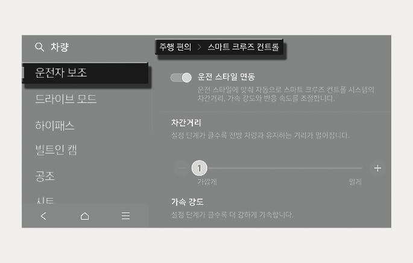

스마트 크루즈 컨트롤 설정

2C_SCCBasedOnStyle
시동 'ON' 상태에서 인포테인먼트 시스템의 설정 > 차량 > 운전자 보조 > 주행 편의 > 스마트 크루즈 컨트롤을 차례로 선택하십시오. 차간거리, 가속 강도, 반응 속도를 설정할 수 있습니다.
-
운전 스타일 연동을 설정하면 스마트 크루즈 컨트롤이 운전자의 주행 성향에 맞춘 차간거리, 가속 강도, 반응속도로 연동됩니다. 주행 성향은 개별적으로 설정할 수 있습니다. (사양 적용 시)
-
스마트 크루즈 컨트롤이 운전 스타일 연동으로 작동 중일 때 차간거리 (
å ) 버튼을 길게 누르면 운전 스타일 연동은 비활성화됩니다. 다시 차간거리 (å ) 버튼을 길게 누르면 운전 스타일 연동으로 활성화됩니다. -
운전자의 주행 성향은 운전자가 직접 주행하는 상황에서 지속적으로 학습하여 반영됩니다.
-
운전자 스타일 연동 비활성화 시, 운전자의 주행 성향(차간거리, 가속 강도, 반응속도)은 운전자 스타일 연동과 동일한 단계로 유지됩니다.
-
운전자 스타일 연동 활성화 및 비활성 시 표시되는 운전자의 주행 성향(차간거리, 가속강도, 반응속도)의 단계가 같더라도 제어되는 성향은 다를 수 있습니다.
-
스마트 크루즈 컨트롤은 운전자를 위한 주행 편의 기능입니다. 차량 조작의 책임은 운전자에게 있습니다. 스마트 크루즈 컨트롤에만 의존하지 마시고, 항상 주의를 기울이고 안전 운전하십시오.
-
스마트 크루즈 컨트롤은 예기치 못한 상황이나 복잡한 교통 상황을 인지할 수 없습니다. 항상 도로 및 교통 상황에 주의를 기울이고 필요하면 브레이크 페달을 밟아 직접 속도를 조절하십시오.
-
스마트 크루즈 컨트롤을 사용하지 않을 때는 반드시 기능을 끄십시오.
-
스마트 크루즈 컨트롤 작동 중에는 차량이 멈춰 있더라도 도어를 열지 마십시오.
-
돌발 상황이나 위험 상황에 대처할 수 있도록 설정한 속도와 차간거리 단계를 항상 기억하십시오.
-
차량의 속도와 도로 조건 등에 따라 안전 거리를 유지하십시오. 특히, 고속 주행 상황에서 차간거리 단계를 가깝게 설정하면 전방 차량과의 충돌 등 위험한 상황이 발생할 수 있습니다. 항상 주의를 기울이십시오.
-
차간거리를 유지하며 주행하는 중에 전방의 차량이 사라지면 설정속도까지 가속될 수 있습니다. 위험한 상황에 대처할 수 있도록 주의를 기울이십시오.
-
오르막길에서는 속도가 감소하고 내리막길에서는 속도가 증가할 수 있습니다.
-
옆 차로의 차량이 끼어드는 상황에 대처할 수 있도록 주의를 기울이십시오.
-
트레일러 등을 견인하면, 차량이 잦은 변속 및 높은 RPM 으로 주행하거나 스마트 크루즈 컨트롤의 성능이 저하될 수 있습니다. 항상 주의하여 운전하십시오.
-
차량이 견인될 때는 스마트 크루즈 컨트롤을 끄십시오.
-
강한 전자파에 의해 스마트 크루즈 컨트롤이 해제될 수 있습니다.
-
스마트 크루즈 컨트롤 작동 중에 전방의 물체를 감지하지 못해 충돌이 발생할 수 있으므로 주의를 기울이십시오.
-
전방의 차량이 차로를 자주 변경할 경우 스마트 크루즈 컨트롤의 반응 속도가 느려질 수 있으며, 옆 차로의 차량에 반응할 수도 있습니다. 전방을 주시하여 위험한 상황에 대처할 수 있도록 주의를 기울이십시오.
-
경고문이 표시되지 않거나 경고음이 울리지 않더라도 위험 상황을 대비해 항상 주의를 기울이십시오.
-
안전벨트 미착용 등 다른 경고음이 우선하여 발생하는 동안에는 스마트 크루즈 컨트롤 경고음이 발생하지 않을 수 있습니다.
-
라디오 등 차량 내부 소리나 외부 여건에 따라 경고음이 들리지 않을 수 있습니다. 항상 도로 상황에 주의를 기울이십시오.
-
차량 제조사는 스마트 크루즈 컨트롤 작동 중 운전자의 도로 교통법 위반 행위나 사고에 대하여 어떠한 책임도 지지 않습니다.
-
속도를 설정할 때는 반드시 법규로 정해진 규정 속도 이내로 설정하십시오.
-
시동 또는 인식 센서 초기화(재부팅 등) 시 일정 시간 동안 기능이 작동하지 않을 수 있습니다.
-
스마트 크루즈 컨트롤에 의해 브레이크 제어 시 소리가 날 수 있습니다.
-
안전하지 않은 주행 성향(급가속 등)은 운전 스타일 연동에 반영되지 않을 수 있습니다.
-
운전 스타일 연동은 운전자의 차간거리, 가속 강도, 반응 속도 외 다른 주행 성향을 반영하지 않습니다.